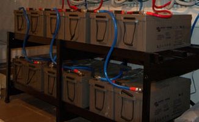

Примерный расчет аккумуляторной батареи для автономных систем электроснабжения

При расчете системы автономного электроснабжения очень важно правильно выбрать емкость аккумуляторной батареи (АКБ).
Для предварительного расчета Вы можете руководствоваться следующими простыми правилами.
емкость, которую должна выдавать АКБ, рассчитывается исходя из количества электроэнергии в Вт*ч, потребляемого от АКБ в режиме разряда.
Допустим емкость 1 АКБ 100 АЧ, и вольтаж 12 В. Соответственно полная емкость составит 100 АЧ *12 В=1200 Вт*ч. Беда в том, что если разрядить такой АКБ на 100% он выйдет из строя. Поэтому нужно оставлять 30% емкости. Соответствено 100 АЧ * 12 В * 0.7=840 Вт*ч
Если батарей несколько - то количество энергии в них складывается.
в общем случае нужно руководствоваться следующими параметрами: допустимая глубина разряда не должна превышать 30-40% для герметичных необслуживаемых батарей, и не более 50% для стартерных батарей. При циклических режимах работы аккумулятора нужно применять гелевые аккумуляторы или специальные аккумуляторы с жидким электролитом. При буферном режиме работы (т.е. если основное время аккумуляторы находятся в заряженном состоянии и иногда, при пропадании электрической сети, отдают свою энергию) можно применять аккумуляторы AGM. Необходимо учитывать, что степень заряда аккумулятора не зависит жестко от его напряжения. При быстром разряде большими токами допускается более низкое конечное напряжение батарей (до 9,8В), а если аккумулятор разряжается малым током длительное время, то он может быть разряжен на 100% даже при напряжении на нем более 11,5В.
емкость АБ понижается с понижением температуры Гелевые аккумуляторы меньше теряют емкость при понижении температуры, AGM и стартерные обычно имеют емкость в 2 раза ниже номинальной уже при 0°C и при дальнейшем понижении температуры их полезная емкость резко падает.
срок службы АБ понижается при увеличении температуры окружающей среды выше 25 °C.
Иногда, информация о том до какого напряжения проседает АКБ при разряде разными токами указывает производитель в пасспорте на аккумулятор.
Предположим, что нам нужно обеспечить работу прибора мощностью 2000 Вт в течении 5 часов - т.е. его потребление будет 10000Вт*ч. и для этого мы хотим использовать аккумуляторы на рабочее напряжение 12В и емкостью 100 АЧ.
Давайте рассчитаем сколько таких АКБ нам потребуется.
Количество запасенной энергии у заряженного аккумулятора будет равно:
P=RxV=100Ачx12В=1200 Вт.ч
Такое количество энергии можно получить при полном разряде полностью заряженного аккумулятора. Но, аккумуляторы могут быть и не полностью заряженными. Кроме того, глубокий полный разряд после небольшого количества циклов заряд-разряд, быстро выведет аккумуляторы из строя. Например, обычный хороший аккумулятор при разряде на 30 % его емкости и последующей сразу после разряда зарядке способен выдержать 1000 таких циклов. Если при разряде отобрать 70% емкости, то количество циклов уменьшится примерно до 200. Поэтому, при расчетах нужно вводить коэффициент, который учитывает глубину разряда.
Извлекаемое количество энергии в АКБ равно
P=RxVxk
P=100Ачx12Вx0.7
Соответственно, для определения емкости нужно количество потребляемой энергии разделить на напряжение аккумулятора умноженное на коэффициент емкости.
Тогда формула определения необходимой емкости будет иметь такой вид:
E=Q / (V x k)
Где Е - необходимая общая емкость аккумуляторов в Ач;
Q- количество энергии, которую нужно получить от аккумуляторов в Вт.ч;
V-напряжение каждого из аккумуляторов;
k-коэффициент использования емкости, учитывающий, какую часть энергии всех используемых аккумуляторов можно реально использовать потребителям.
Разобравшись с теорией, можно определить необходимую емкость аккумуляторов по заданным параметрам.
Для того чтобы определить, какую емкость можно отобрать от аккумуляторов, чтобы получить электрическую энергию в количестве 10000 Вт. ч, делим это количество энергии на рабочее напряжение каждого аккумулятора равное 12В. В результате получаем, что надо отобрать 833 А.ч от имеющейся емкости аккумуляторов. Если применить коэффициент емкости равный 0, 7 , учитывающий то обстоятельство , что недопустимо часто полностью разряжать кислотные аккумуляторы, то получаем значение необходимой установленной емкости аккумуляторов равное 1190 Ач.
E=10000Вт.ч/(12Вх07)=1190 Ач
Поскольку мы в нашем примере хотели использовать АКБ 100 Ач, то в этом случае необходимо будет 12 АКБ такой емкости.